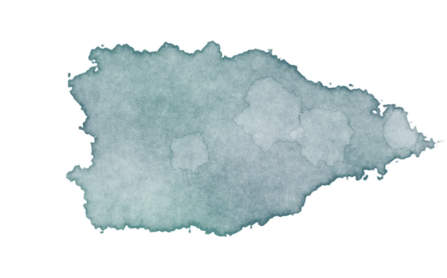
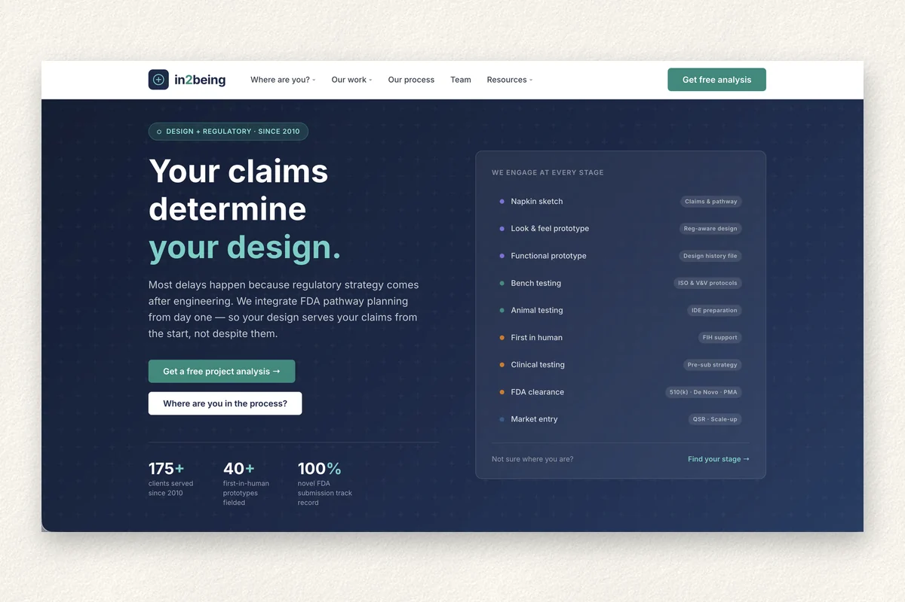

Internship · 2026
in2being
Turning a perception problem into a product strategy
Clients of this medical device consultancy didn't consistently understand what it could do, and often trusted its advice only after a misstep had cost them. I reframed the problem from "clients don't value the integrated model" to "clients can't see how development and regulatory work connect."
- Role
- UX research, strategy, interaction design
- When
- Internship · June to August 2026
- Tools
- Figma, FigJam, PowerPoint, AI-assisted prototyping
- 10+ stakeholder interviews synthesized into a six-part taxonomy of client confusion
- A nine-stage client journey tool, a working prototype with device-class and plain-English toggles
- A usability plan with five participant segments and ten tasks, ready to run
![Journey map for Sophie across six stages: weekly grocery run, hears about Argus, checks the website, picks how to shop, shops, and next week. Rows show what she does, what she's thinking, how she feels, touchpoints, pain points tagged with research findings, and how-might-we opportunities. Her feelings start neutral, rise to curious when she hears about Argus, drop to confused on the website and frustrated when picking how to shop, rise to good but price-conscious while shopping, and settle below neutral as habit wins the next week.](images/argus-journey.webp)